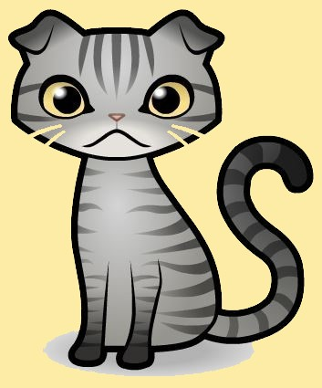
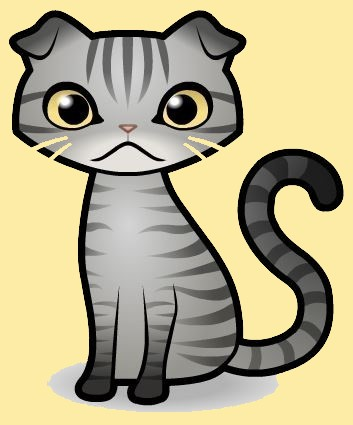

구해줘, 펫즈 
구해줘, 펫즈  간식주세요!
입양하거나 보호소 봉사활동 가시는분 및 가실분들은 보호소에 있는 강아지 고양이들을 잘 보살펴 주시고 사랑으로 책임감을 가지고 항상 주의 해주시기 바랍니다. 단순 호기심으로 가시는 분들은 삼가해주시기 바라고 혹시모를 안전사고에 대해 주의해주시기 바랍니다.
Q: 유기견, 유기묘들이 많이 생기는 이유가 무엇인가요???
A: 그 이유는 사람들이 단순호기심 또는 귀여워서, 키워보고싶어서 작고 이쁜아이들을 데려와 키우다가 크고나서
경제적 여유 또는 귀찮아짐, 외모변형등으로인해 관심이 가지 않아 몰래 버리거나, 다른사람에게 떠넘기는 일이 많다보니
유기견, 유기묘들의 숫자가 증가하게 되었습니다.